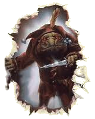

Hover over the chapters to read about trolls


A word about names:
Trolls don’t have names. They are very imitative creatures and identify each other by mimicking the actions and voices of others. That is to say, if I were at the dinner table, I might say, “Jeremiah, please pass the beans.” Jeremiah, of course, would know that I was talking to him because I had addressed him by name. A Troll, on the other hand, might say, “Please pass the beans.” The Troll being addressed would know that he or she was being addressed by the tone of voice of the first Troll. It’s almost as if Jeremiah had a beaky nose and a waddly neck, like a turkey. Rather than addressing him by name, I might ask him to pass the beans by saying just that, but in a gobble-gobble sort of voice. Everyone in the room would then know that I was addressing Jeremiah because I had used a voice that reminded them all of a turkey. To Trolls, this was not something that was used to demean or offend. Trolls, unlike humans, are very aware of their own characteristics and recognize them when they are imitated. This is one of their great strengths. They do not engage in verbal humor and, in fact, find language in its verbal form to be most cumbersome.
A word about Elders:
Trolls don’t have a word for Elder. They also don’t have a word for Leader. Trolls that lead generally do so by mutual agreement of all of the Trolls involved. Since the nature of a Troll’s pride revolves around a job well done, a Troll is more inclined to want a job at which he or she will succeed, rather than a job that is considered classically powerful. The leaders of a Troll community are generally the eldest, but do not necessarily lead by default. Also, the word to describe them roughly translates into parents. Decisions that are made for the community are usually made by the parents with the largest families.
A word about school:
Trolls have never believed in formal education in the classroom. In fact, it was a concept of which they had not conceived and were quite confused by the gathering of small humans in rooms so that they might have to suffer through the verbal lectures of a single larger human. Trolls, instead educate their young by including their young in their daily lives. As a part of the adult community, the children tend to learn more than they might from a lecture. They are shown things and encouraged to participate in carrying out important responsibilities. As a Troll matures, he or she will determine what interests him or her. At that time, a young Troll may leave his or her natural parents during the day and spend time with another Troll who is an expert or master at the occupation of interest. It is rare that these apprenticeships fail. Trolls are very steadfast. Even the young tend to stick with their decisions.
A word about good and evil:
Good trolls have bright yellow eyes. Evil trolls have smoldering red eyes. That’s simple to remember and a good rule of thumb. But, like humans, trolls are individuals. The genetic stuff that determines the color of the eyes cannot also determine the nature of the personality. There is something in Trolls which directs their instinctive behavior. The conscience, which is really the determination between good and evil, is stronger in the yellow-eyed Trolls than it is in the red-eyed trolls. However, a red-eyed Troll can very well overcome whatever it is that might make him or her instinctively act evilly or vice versa. Just because a yellow-eyed Troll might feel bad about skinning a cat, that won’t necessarily stop him from doing it if it’s something he wants to do.